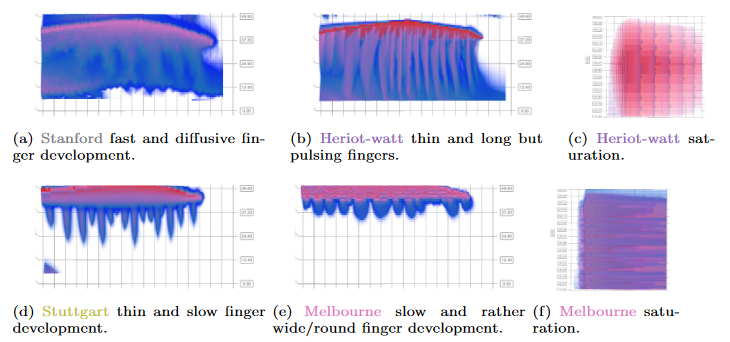

Visual Ensemble Analysis of Fluid Flow in Porous Media across Simulation Codes and Experiment


Authors. Ruben Bauer, Quynh Quang Ngo, Guido Reina, Steffen Frey, Bernd Flemisch, Helwig Hauser, Thomas Ertl, Michael Sedlmair
Venue. Transport in Porous Media (2023) Full Paper
Type. Full Paper
Materials.
PDF
Abstract. We study the question of how visual analysis can support the comparison of spatio-temporal ensemble data of liquid and gas flow in porous media. To this end, we focus on a case study, in which nine different research groups concurrently simulated the process of injecting CO2 into the subsurface. We explore different data aggregation and interactive visualization approaches to compare and analyze these nine simulations. In terms of data aggregation, one key component is the choice of similarity metrics that define the relationship between different simulations. We test different metrics and find that using the machine-learning model “S4” (tailored to the present study) as metric provides the best visualization results. Based on that, we propose different visualization methods. For overviewing the data, we use dimensionality reduction methods that allow us to plot and compare the different simulations in a scatterplot. To show details about the spatio-temporal data of each individual simulation, we employ a space-time cube volume rendering. All views support linking and brushing interaction to allow users to select and highlight subsets of the data simultaneously across multiple views. We use the resulting interactive, multi-view visual analysis tool to explore the nine simulations and also to compare them to data from experimental setups. Our main findings include new insights into ranking of simulation results with respect to experimental data, and the development of gravity fingers in simulations.
Pending publication